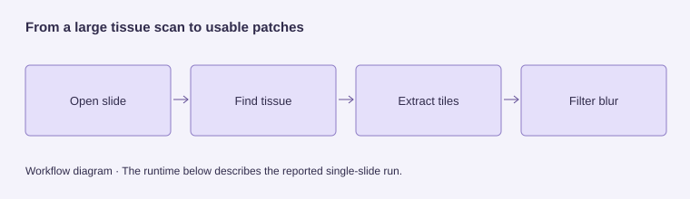

Whole-slide image preprocessing
~85 seconds for the reported slide · 16 CPUs
A scanned tissue slide can be too large to analyze at once. Our pipeline turns it into smaller, useful image patches. I worked on opening the slides, keeping the pipeline reproducible and running it on a supercomputer.
The problem
Make very large tissue scans manageable for analysis.
My contribution
Slide opening, pipeline maintenance, cross-platform compatibility and HPC execution.
Result
About 85 seconds for the reported slide on 16 CPUs.
What I learned
Library compatibility can determine whether a pipeline is reproducible in practice.
Reported single-slide run on Bianca. Not a full-dataset average or a measured speedup over a baseline.

My contribution
I worked on the initial slide-opening stage and maintained the repository and pipeline. I focused on making the workflow reproducible across macOS, Windows and Linux, and was responsible for running the project on the HPC supercomputer using Apptainer.
The engineering problem
Liver whole-slide images are too large to feed directly into a typical learning model. The team pipeline opens the slides, identifies tissue, extracts smaller patches and filters blurred regions to prepare usable inputs for downstream machine learning.
Reproducibility was practical work
Library mismatches across operating systems introduced problems we had not anticipated. Keeping the pipeline running meant learning unfamiliar tools, resolving dependencies and checking that components still worked together as the project developed.
Apptainer provided a packaged environment for the cluster. The report describes execution on Bianca with the Python runtime and required libraries bundled for a consistent setup across its compute nodes.
Runtime & throughput
For the reported approximately 250 MB whole-slide image, the full pipeline completed in about 85 seconds on Bianca using 16 CPUs. The tiling stage took 72 seconds, extracting 11,511 tissue-containing tiles from 15,029 candidate regions. Approximately 23% of candidate regions were excluded as background or non-tissue.
Blur detection then assessed all 11,511 extracted tiles: 11,494 were retained as sharp and 17 were flagged as blurry. These figures describe the slide and hardware configuration reported by the team, rather than a benchmark across the full dataset or a measured speedup over a serial baseline.
Tissue-masking evaluation
The report evaluates tissue masking on 369 liver cancer whole-slide images using GrandQC quality-control masks converted to binary tissue masks. Its double-pass method with logical AND reports an IoU of 0.9464 and a Dice score of 0.9686. These are team tissue-masking results, not cancer-diagnosis scores or individual performance claims.
What I learned
This project taught me how much work sits between a component that runs locally and a pipeline other people can reproduce. Maintaining the workflow across machines and running it on HPC became a substantial part of the project, alongside the image-processing methods.
Why use Apptainer?
Library mismatches across macOS, Windows and Linux made a local setup insufficient. Apptainer packaged the runtime and dependencies for execution on Bianca’s compute nodes.